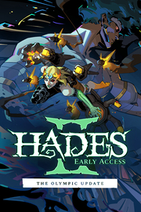

Hades II
Detalles
|  | |
| Tiempo de juego | No Jugado |
| Última actividad | Nunca |
| Añadido | 11/6/2024 14:41:31 |
| Modificado | 11/8/2024 17:33:41 |
| Estado de finalización | No Jugado |
| Librería | Playnite |
| Fuente | 6TB STORE |
| Plataforma | PC (Windows) |
| Fecha de lanzamiento | 5/6/2024 |
| Puntuación de la Comunidad | 93 |
| Puntuación de la Crítica | |
| Puntuación de usuario | |
| Género | Acceso anticipado Acción Indie Rol |
| Desarrollador | Supergiant Games |
| Editor | Supergiant Games |
| Característica | Cloud Saves Compat. Total Con Mando Préstamo Familiar Subtítulos Disponibles Un Jugador |
| Enlaces | Punto de encuentro Discusiones Guías Noticias Página de la tienda PCGamingWiki |
| Tag | Acceso anticipado Acción Ambientales Buena trama Dibujados a mano Difíciles Exploración de mazmorras Hack and slash Indie Isométricos Mitología Muerte permanente Protagonista femenina Roguelike Roguelike de acción Roguelite Rol Rol de acción Tipo «Dark Souls» Un jugador |
Descripción

La primera continuación de Supergiant Games se basa en los mejores aspectos del juego de mazmorras divino de tipo rogue-like y ofrece una experiencia de juego totalmente nueva, llena de acción y con una rejugabilidad ilimitada, con el Inframundo de los mitos griegos y su conexión con los albores de la brujería como telón de fondo.
ÁBRETE PASO MÁS ALLÁ DEL INFRAMUNDO
Encarnarás a la Princesa inmortal del Inframundo, y explorarás un mundo más extenso y elaborado. Tendrás que derrotar a las fuerzas del Titán del Tiempo con la ayuda del Olimpo, en una historia desgarradora que se irá desgranando poco a poco con cada uno de tus logros o reveses.DOMINA LA BRUJERÍA Y LAS ARTES OSCURAS
Imbuye de magia ancestral tus legendarias Armas de la Noche para que nadie pueda interponerse en tu camino. Poténciate con las bendiciones de más de una docena de dioses del Olimpo, desde Apolo hasta Zeus. Tendrás a tu disposición un sinfín de opciones para mejorar tus habilidades.
MÉZCLATE CON (MÁS) DIOSES, FANTASMAS Y MONSTRUOS
Conoce a decenas de personajes totalmente desarrollados con un montón de caras nuevas y antiguas amistades. Además, contarás con varios tipos de interacciones que te servirán para estrechar tus lazos y vivir innumerables momentos narrativos generados por tus propias decisiones.CADA INTENTO FORMA UNA AVENTURA DIFERENTE
Te esperan nuevas ubicaciones, desafíos, mejoras y sorpresas hechas a medida con cada uno de tus múltiples periplos por un Inframundo en constante cambio. Revela los misterios del Altar de los Arcanos, domina espíritus familiares y reúne materiales con tus Herramientas de los Ocultos para acercarte cada vez más a tu objetivo.LAS VENTAJAS DE LA INMORTALIDAD
Gracias a la gran cantidad de mejoras permanentes y el regreso del modo Dios, no es necesario que tengas poderes divinos para disfrutar de todo lo que contiene Hades II. De todos modos, si resulta que los tienes, podrás enfrentarte a desafíos progresivos con mejores recompensas y la posibilidad de alardear de tus proezas.